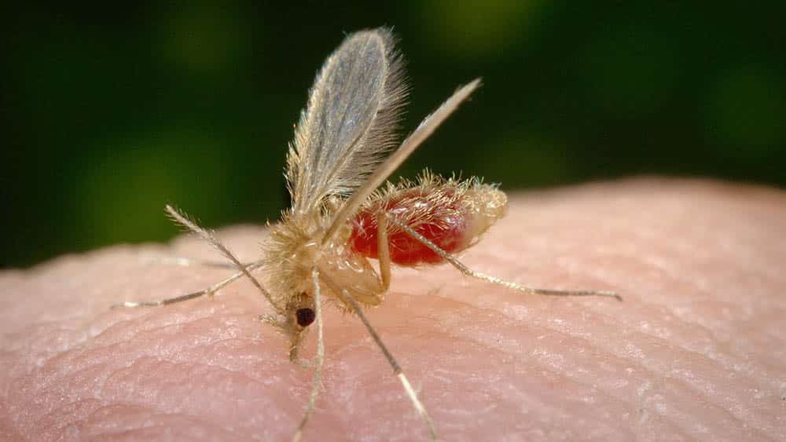

<!DOCTYPE html>
<html lang="pt-br">
<head>

    <meta charset="UTF-8">
    <meta http-equiv="X-UA-Compatible" content="IE=edge">
    <meta name="viewport" content="width=device-width, initial-scale=1.0">
    <link rel="stylesheet" href="/styles/style.css">
    <link rel="stylesheet" href="styles/scrollbar.css">
    
    <link href="https://cdn.jsdelivr.net/npm/bootstrap@5.3.0/dist/css/bootstrap.min.css" rel="stylesheet" integrity="sha384-9ndCyUaIbzAi2FUVXJi0CjmCapSmO7SnpJef0486qhLnuZ2cdeRhO02iuK6FUUVM" crossorigin="anonymous">
    <link rel="icon" type="image/png" href="src/assets/img/logo.png">
    <title>Avistei - L. longipalpis</title>
</head>

<body style="background-image: url('src/assets/img/topside.png'); background-repeat: no-repeat; background-size: cover; background-attachment: fixed; position: relative;">

    <div id="app"></div>
    <script src="https://cdn.jsdelivr.net/npm/bootstrap@5.3.0/dist/js/bootstrap.bundle.min.js" integrity="sha384-geWF76RCwLtnZ8qwWowPQNguL3RmwHVBC9FhGdlKrxdiJJigb/j/68SIy3Te4Bkz" crossorigin="anonymous"></script>
    <script src="https://cdn.jsdelivr.net/npm/vue@2.7.9"></script>
    <script>
        new Vue({
            el: '#app',
        template: `
        <div class="container">

            <!-- Navbar -->
<div style="padding-bottom: 5%;">
 <nav class="d-flex align-items-center justify-content">
     
     
     <a href="animals.html" class="d-flex flex-column align-items-center">
         
         <span>Animais</span>
     </a>
     
     <a href="about.html" class="d-flex flex-column align-items-center">
         
         <span>Projeto</span>
     </a>
     
     <a href="health.html" class="d-flex flex-column align-items-center">
         
         <span>Saúde</span>
     </a>
 </nav> 
</div>


<div class="row">

<!-- Buttons / Content -->
 <div class="col-sm-5">
   <div class="text-container">
     <h3>Mosquito-palha<i>(Lutzomyia longipalpis)</i></h3>
     <p>
       Lutzomyia longipalpis é um inseto pertencente à família Psychodidae e é conhecido popularmente como mosquito-palha ou mosquito-palha-do-cão. Essa espécie é encontrada em diferentes países da América Latina, incluindo Brasil, Argentina, Paraguai, Uruguai, Venezuela, entre outros.
       <br><br>
       O Lutzomyia longipalpis é considerado o principal vetor da Leishmaniose Visceral Americana, uma doença parasitária grave causada pelo protozoário Leishmania infantum. Essa doença afeta humanos e outros mamíferos, incluindo cães.
     </p>
<p>
 <button class="btn btn-success" type="button" data-bs-toggle="collapse" data-bs-target="#collapseWidthExample" aria-expanded="false" aria-controls="collapseWidthExample">
   Sobre o animal
 </button>
 <button class="btn btn-danger" type="button" data-bs-toggle="collapse" data-bs-target="#collapseWidthExample2" aria-expanded="false" aria-controls="collapseWidthExample2">
   Sofri um acidente
 </button>
</p>


<div style="min-height: 120px;">
 
 <div class="collapse collapse-horizontal" id="collapseWidthExample">
   <div class="card card-body-lg" style="max-width: 600px; width: 600px;word-break: break-word;">
<ul>
 <li>Lutzomyia longipalpis</li>
 <li>O Lutzomyia longipalpis é um mosquito-palha de hábitos crepusculares e noturnos.</li>
 <li>Se reproduz em áreas rurais e periurbanas, preferencialmente em locais com vegetação densa e úmida, como matas, bordas de rios e áreas com acúmulo de matéria orgânica.</li>
 <li>Os mosquitos-palha adultos têm cerca de 3 milímetros de comprimento e são de cor marrom-amarelada. Possuem asas pilosas e longas antenas.</li>
 <li>A reprodução do Lutzomyia longipalpis ocorre através da deposição de ovos em locais úmidos, como buracos no solo, troncos em decomposição ou em abrigos de animais. As larvas se desenvolvem em substratos orgânicos úmidos.</li>
 <li>A Leishmaniose Visceral Americana, transmitida pelo Lutzomyia longipalpis, é uma doença de importância em saúde pública. Ela pode causar sintomas graves, como febre, fraqueza, perda de peso, anemia e comprometimento do fígado e baço. Se não tratada, pode levar à morte.</li>
 <li>Para prevenir a picada do Lutzomyia longipalpis e reduzir o risco de contrair a Leishmaniose Visceral Americana, é recomendado o uso de repelentes, especialmente durante os horários de maior atividade do mosquito. </li>
</ul>
   </div>
 </div>

 <div class="collapse collapse-horizontal" id="collapseWidthExample2">
   <div class="card card-body-lg" style="max-width: 600px; width: 600px;word-break: break-word;">
<ol>
 <li>Lave o local da picada: Use água e sabão para lavar suavemente a área da picada, a fim de reduzir o risco de infecção.</li>
 <li>Evite coçar: Embora seja tentador coçar a picada, evite fazê-lo. Coçar pode levar a lesões na pele e aumentar o risco de infecção.</li>
 <li>Aplique gelo: Coloque uma compressa fria ou uma bolsa de gelo envolvida em um pano fino sobre a picada. Isso pode ajudar a reduzir a coceira, o inchaço e o desconforto.</li>
 <li>Use pomadas ou loções: Você pode aplicar uma pomada ou loção anti-histamínica de venda livre na picada para aliviar a coceira. Siga as instruções do fabricante e consulte um profissional de saúde, se necessário.</li>
 <li>Evite automedicação: Evite usar medicamentos ou cremes sem receita médica, a menos que recomendados por um profissional de saúde.</li>
 <li>Observe os sintomas: Fique atento a quaisquer sintomas incomuns após a picada, como inchaço excessivo, vermelhidão intensa, dor persistente, febre, fadiga ou outros sintomas sistêmicos. Se ocorrerem sintomas graves ou persistirem por um longo período de tempo, procure atendimento médico.</li>
 <li>Busque assistência médica: Caso haja suspeita de Leishmaniose Visceral Americana, é importante buscar atendimento médico imediatamente. Informe ao médico sobre a picada e os sintomas que você está experimentando.</li>
 <li>Prevenção da Leishmaniose Visceral Americana: A melhor maneira de evitar a doença é prevenir a picada do mosquito-palha. Use repelentes de insetos que contenham DEET ou icaridina, vista roupas de proteção (como calças compridas e camisas de manga longa) e evite áreas com alta densidade de mosquitos-palha, principalmente durante os horários de maior atividade.</li>
</ol>
   </div>
 </div>

</div>

<div style="min-height: 120px; overflow-x: visible;">
 
</div>


   </div>
 </div>

<!-- Hero Animal --> 
<div class="col-sm-5">
 <div class="image-container">
   
 </div>
</div>

</div>

<br>
<!-- Comments -->
       <h1>Você avistou um desses? Conte-nos!</h1>
               <hr/>
               
               <div class="form-todo form-group">
                   <p>
                       <input type="text" name="author" placeholder="nome" class="form-control-lg" v-model="name">
                   </p>
                   <p>
                       <textarea name="message" placeholder="comentário" class="form-control-lg" v-model="message"></textarea>
                   </p>
                   
                   <button v-on:click="addComment" type="submit" class="btn btn-success" style="-webkit-box-shadow: 3px 3px 5px 5px #000000; box-shadow: 5px 5px 15px 5px #000000;">Comentar</button>
               </div>
               <br>
               
               <div class="list-group">
                   <div class="list-group-item" v-for="(comment, index) in allComments">
                       <span class="comment__author">Autor: <strong>{{ comment.name }}</strong></span>
                       <p>{{ comment.message }}</p>
                       <div>
                           <p><a href="#" title="Excluir" v-on:click.prevent="deleteComment(index)">Excluir</a></p>
                       </div>
                   </div>
               </div>
               
               <hr/>
</div> `,
        data() {
            return {
                comments: [],
                name:'', message: '',
            }
        },
        methods: {
            addComment() {
                if(this.message.trim() === ''){return;}
                this.comments.push({name: this.name, message:this.message});
                this.name ='';
                this.message = '';
            },

            deleteComment(index) {this.comments.splice(index, 1)},
            getImage() {return 'trip.jpg'}
            
        },
        computed:{
            allComments(){
                return this.comments.map(comment => ({
                  ...comment,
                   name: comment.name.trim() === '' ? 'Anônimo' : comment.name
                }))
            }
        },
        watch:{
            comments(val) {
                console.log('val', val);
            }
        }
    });
</script>

    </body>
</html>

